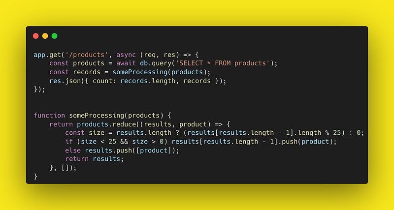
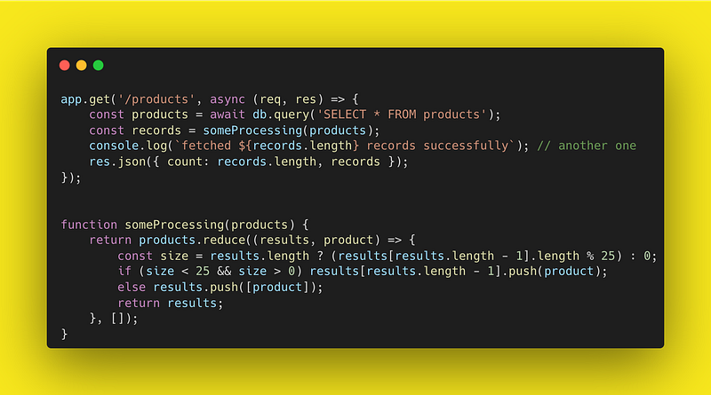
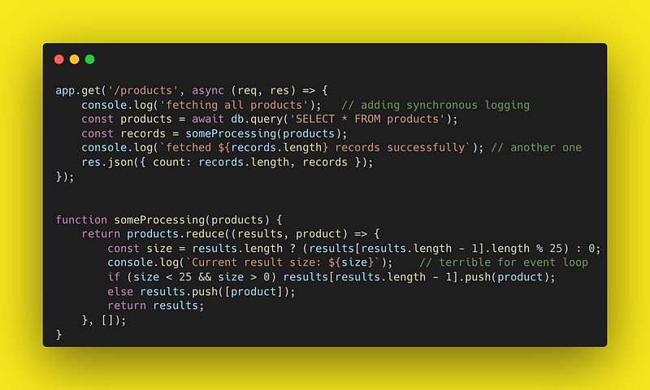
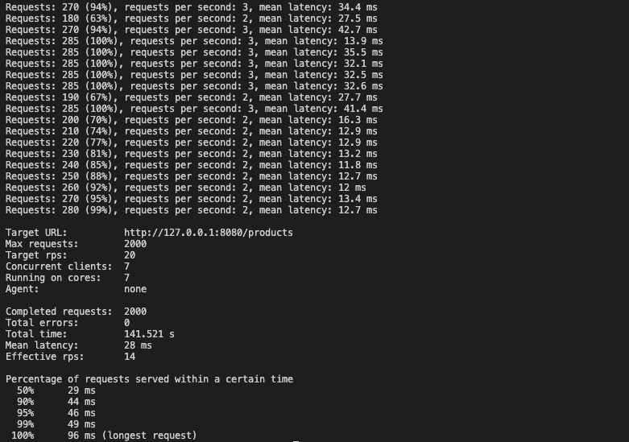
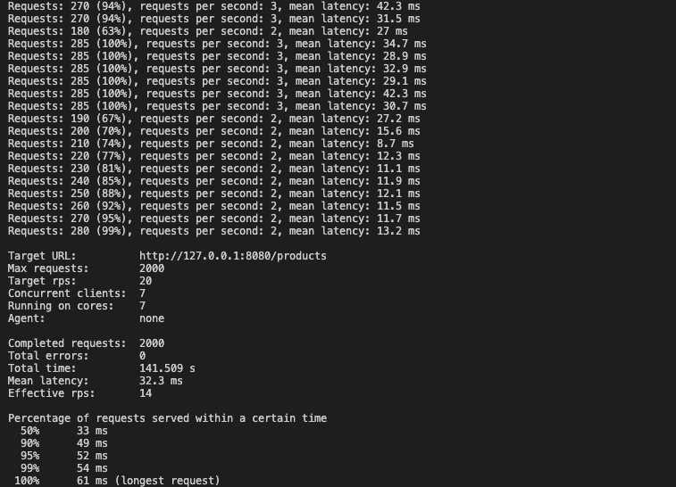
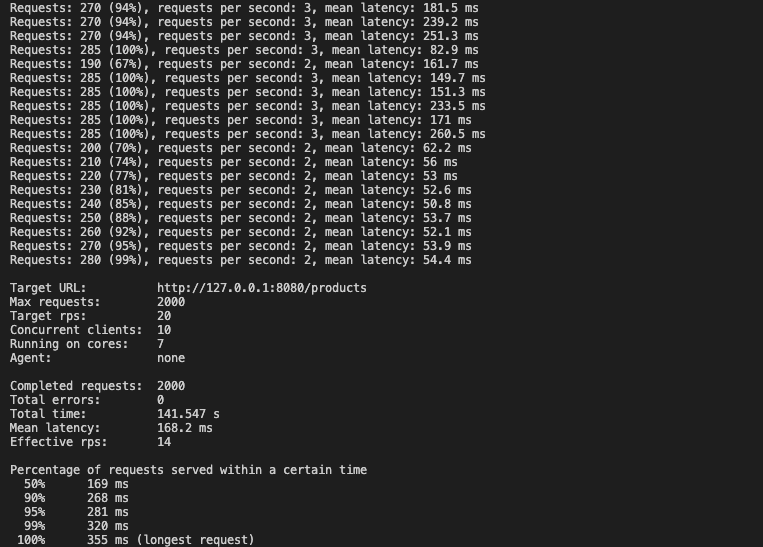

Thinking console.log is just harmless debugging? Think again, this innocent line may be sabotaging your Node.js app in ways you never imagined.
This function call is probably the most used one by the developers across the globe, yet you won’t find it in production codebase of established organisations. If you have ever wondered why, then this article is for you.
My Weekend Experiment
I was thinking about the issues of synchronous logging in Node.js this weekend and hence decided to run some test demonstrations over it. I wrote a super simple express server with GET API /products which reads and process objects from database. I ran 3 tests as follows
- Test 1 : clean and simple without any logs
- Test 2 : added just single console.log in the route handler
- Test 3 : added multiple console.log in the codebase



These changes may appear harmless to you and mostly ignored by many devs while doing PR reviews. Why not? After all they are there for logging purposes. Lets understand what this console.log does underneath.
console.log(…) invoked process.stdout.write(...) which actually write the output on TTY (terminal) which is nothing but a file descriptor. Whats bad is this call is synchronous in nature, hence literally blocks the event loop. Since everything in Node relies on event loop for execution, you can imagine the kind of impact it cause to performance. console.log by design does not use any libuv thread to log asynchronously, hence more such sync log statements in the code, more blocking for the event loop.
Well if you still think console.log is innocent, have a look at the results



The browser story is different
Surprisingly frontend developers won’t agree to this fact, because console.log works different browsers. It actually buffers the bytes and immediately return while actual write happens asynchronously. DevTools in the browser does this async write to the dev console keeping console.log non blocking. But sadly thats not the case on Node.js.
Conclusion
Understanding the technology at depth is a must in backend engineering.
When we use few logs, difference is not obvious in the performance but once they are used in iterations or high frequency regions of codebase, it start doing more and more damage.
Anything that blocks event loop in Node.js must be evaluated to keep it performant. Hence console.log should be a big NO when you review your next PR. Instead use async logging modules like pino and winston.